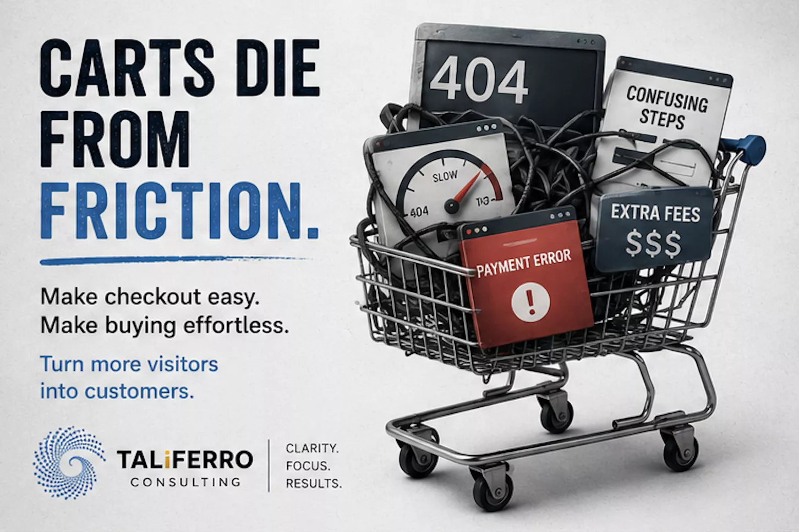

Most e‑commerce stores don’t lose money because the product is bad. They lose it because pages load slow, the checkout feels risky, or the funnel leaks in places no one is measuring. We fix the system so your store is fast, clear, and dependable.

The hard part is not launching a store. The hard part is keeping it reliable while marketing, inventory, promotions, and customer expectations all change at once.

We start with a fast audit, pick the highest‑impact fixes, implement cleanly, and measure. No guessing. No “redesign everything” unless the data says it’s required.
We map drop‑off, speed, errors, and trust signals across mobile and desktop.
We improve clarity, reduce distraction, and make buying feel obvious.
We remove friction, reduce failure modes, and confirm trust and pricing consistency.
We fix tracking and report on what changed so you can repeat what works.
Shopify, WooCommerce, and custom stacks. We keep the approach consistent: speed, clarity, checkout reliability, and measurement.
Less friction and more clarity, especially on mobile.
Reduced script weight, fewer blocking requests, better caching.
Checkout becomes predictable under promotions and traffic spikes.

Strong traffic, weak mobile conversion. Usually the cause isn't one big thing — it's page weight, an unclear product page, loose checkout validation, and analytics events that quietly broke months ago. Fix those four together and completion goes up while support tickets go down.
These articles dig deeper into the execution and data problems that quietly hurt e‑commerce performance.
Why disconnected systems slow decisions, break reporting, and leak revenue.
How execution drag shows up as missed follow‑ups, slow fixes, and stalled growth.
Why fragmented data quietly increases costs and makes optimization harder.
Each guide below covers a different piece of the same system — growth, advice, and speed all feed the same funnel.
Yes. We can work inside Shopify and WooCommerce, and we also build and improve custom e‑commerce stacks. The priority is always the same: speed, clarity, and a checkout flow that does not break under real traffic.
We start with the biggest leakage points: page speed, product page clarity, checkout friction, and trust signals. Then we measure and iterate so changes are tied to outcomes, not opinions.
Yes. We can audit tracking, fix broken events, and set up a measurement plan so you can connect marketing spend to revenue with fewer blind spots.
No. We do strategy, UX and conversion improvements, performance work, and implementation. If the code is fine but the funnel is leaky, we fix the funnel. If the funnel is fine but the platform is slow, we fix the platform.
A link to the store, your platform details, your top products, and what you want to improve (conversion rate, speed, AOV, checkout completion, or operational efficiency). Screenshots and notes are fine.
Book a short call. We’ll identify the biggest leaks and what to fix first.
Prefer email? info@taliferro.com
To make the call useful, send whatever you already have. Even partial info helps.
Screenshots, notes, or a quick paragraph all work.